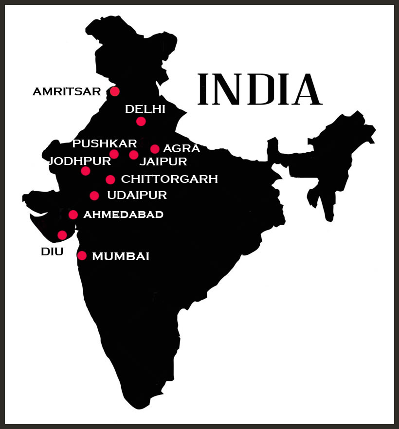
.
After a long flight we arrived into Delhi, were met at the airport by the driver of our bed & breakfast home and then made our way into central Delhi where we found ourselves at Connaught Place. We took sanctuary in a branch of an 'Indian Coffee House' which we fondly remembered from our previous visit to Kerala in 2004.
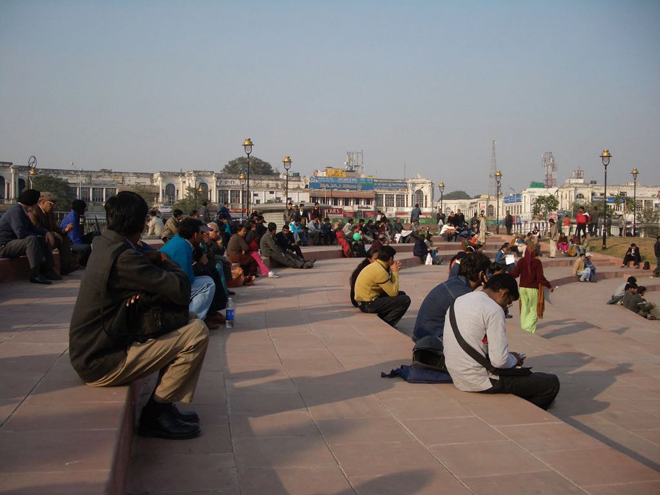
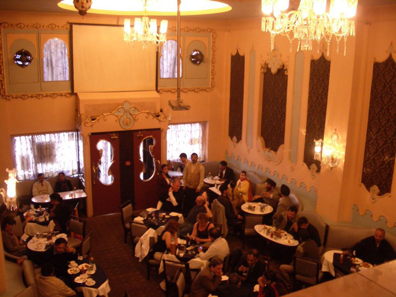
Up very early the next morning, we visited the main flower market where all sorts of flowers, plants and strings of marigolds were being bartered, sold and haggled over. It was bitterly cold as you can see from the fact that everyone appears to be wrapped up in scarves.
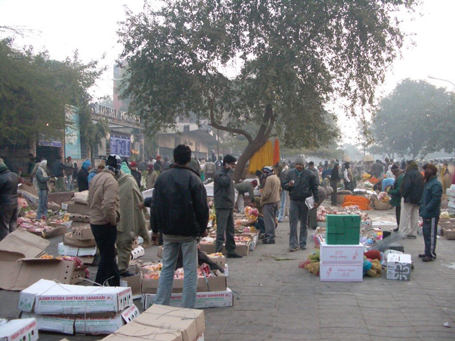
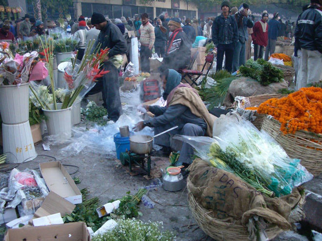
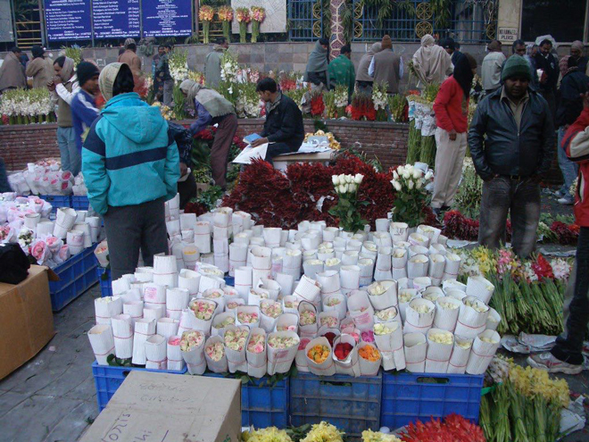
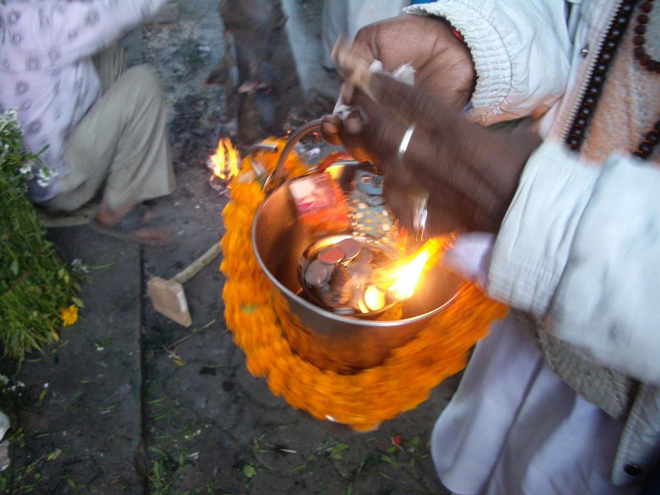
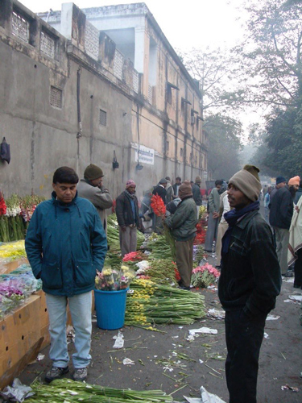
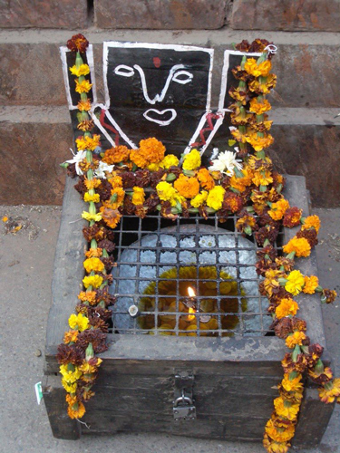
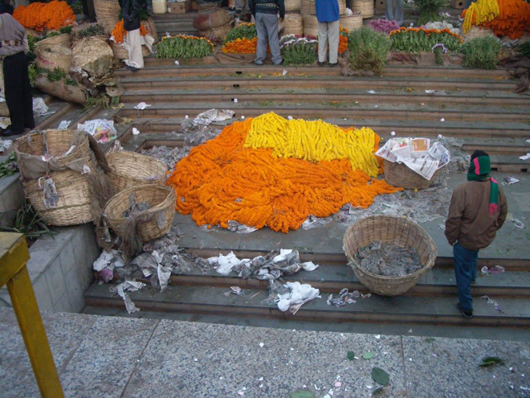
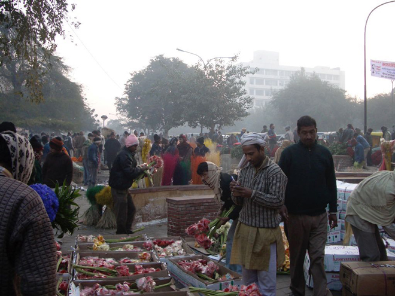
After a quick stop for some deep-fried pakora for breakfast, we walked around the central area of Delhi and marvelled at some of the architectural styles on display.
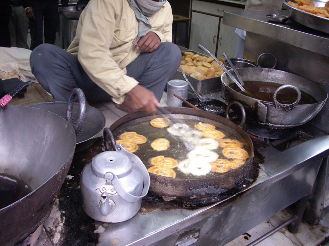
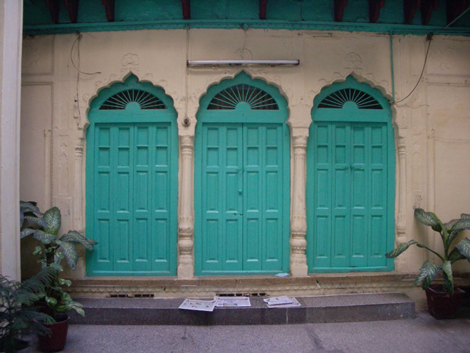
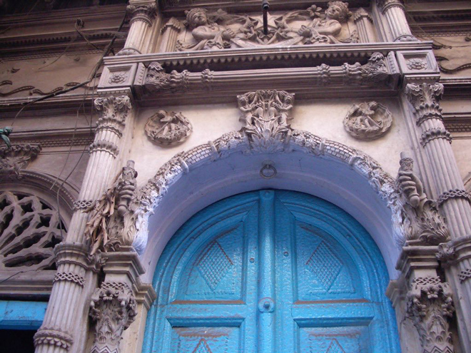
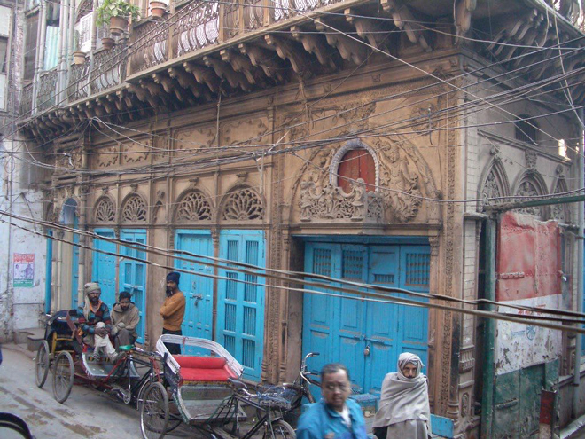
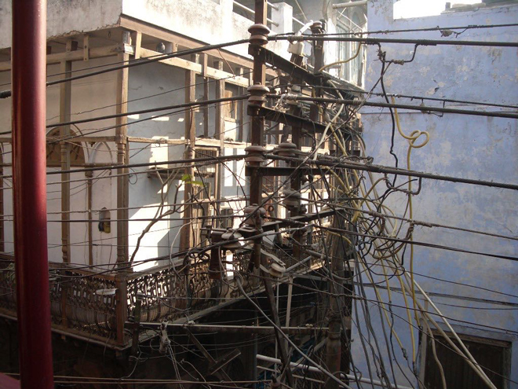
Visiting the main laundry district we saw whole families whose livelihoods depended on washing the clothes and sheets of the well-heeled inhabitants of up-market Delhi.
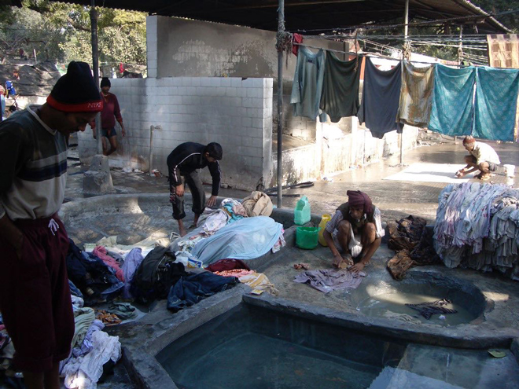
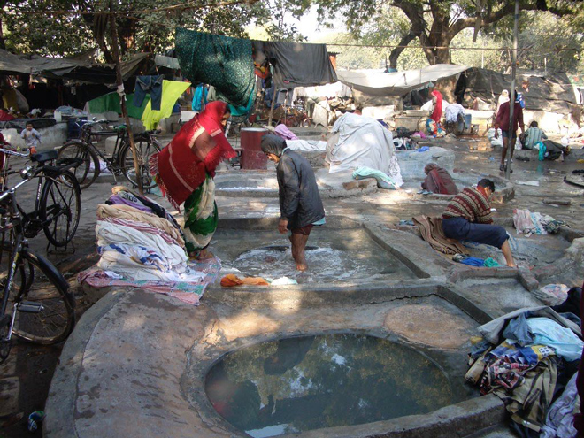
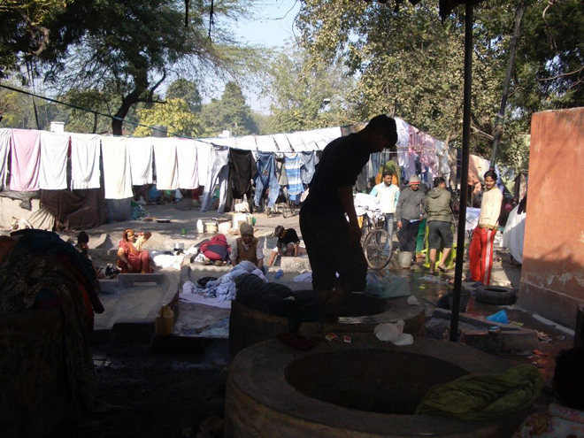
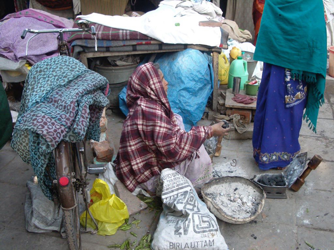
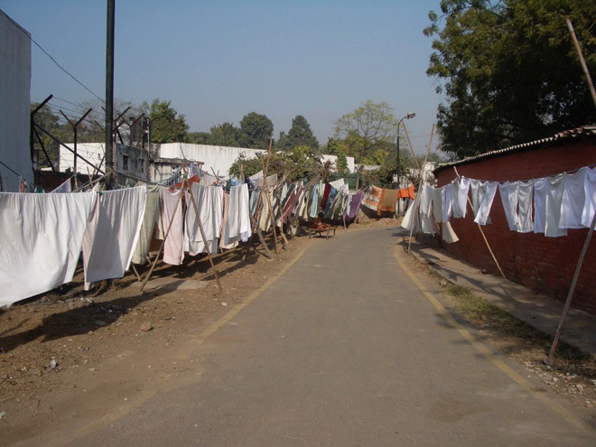
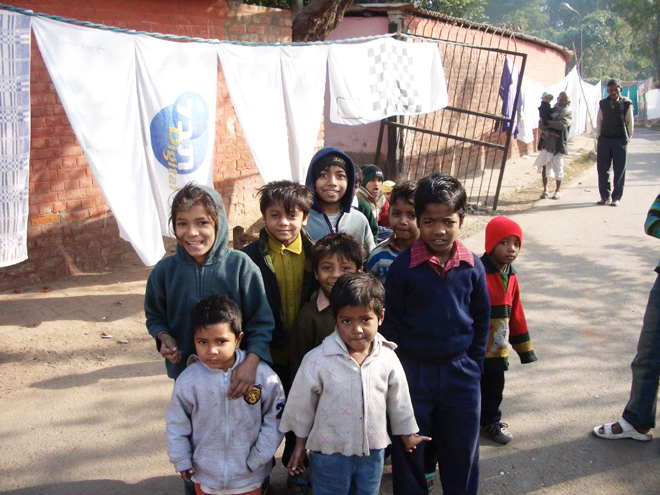
West of Connaught Place, with soaring domes, the large Orissan-style Lakshmi Narayan Temple was erected in 1938 by the rich industrialist BD Birla. The main temple, inaugurated by Mahatma Gandhi, is dedicated to Lakshmi, the goddess of wealth.
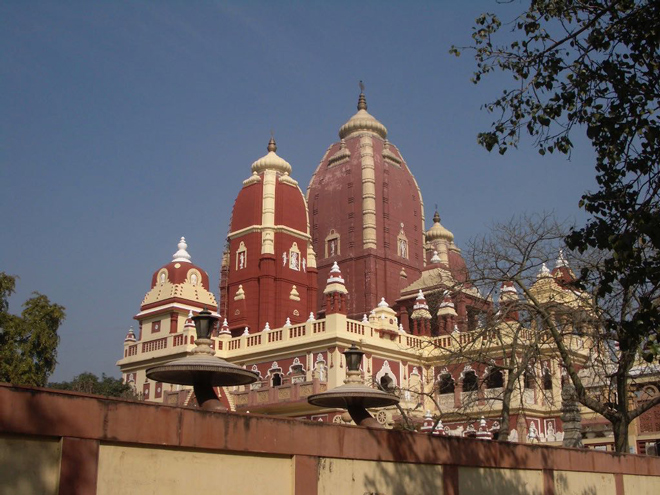
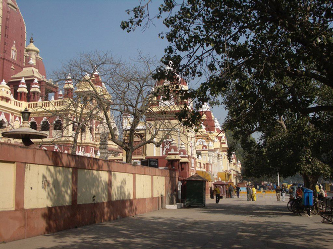
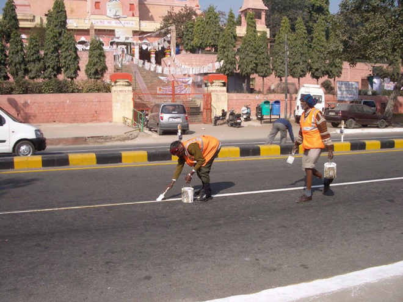
Delhi's main railway station was being rebuilt so it was complete chaos in that area. We did get a glimpse of the parcel delivery depot which was a hive of activity. We enjoyed the matching plant pots adorning the Sulabh Toilet Complex which is, in fact, a toilet museum ...
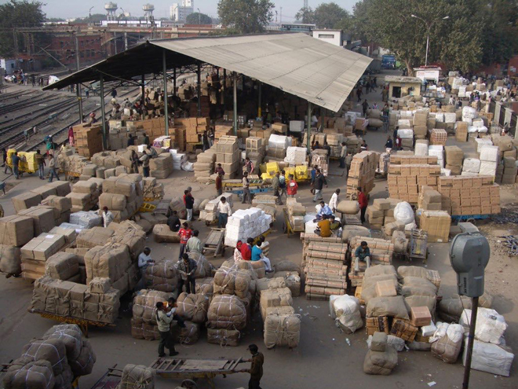
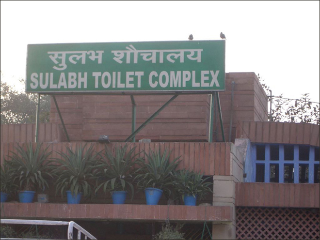